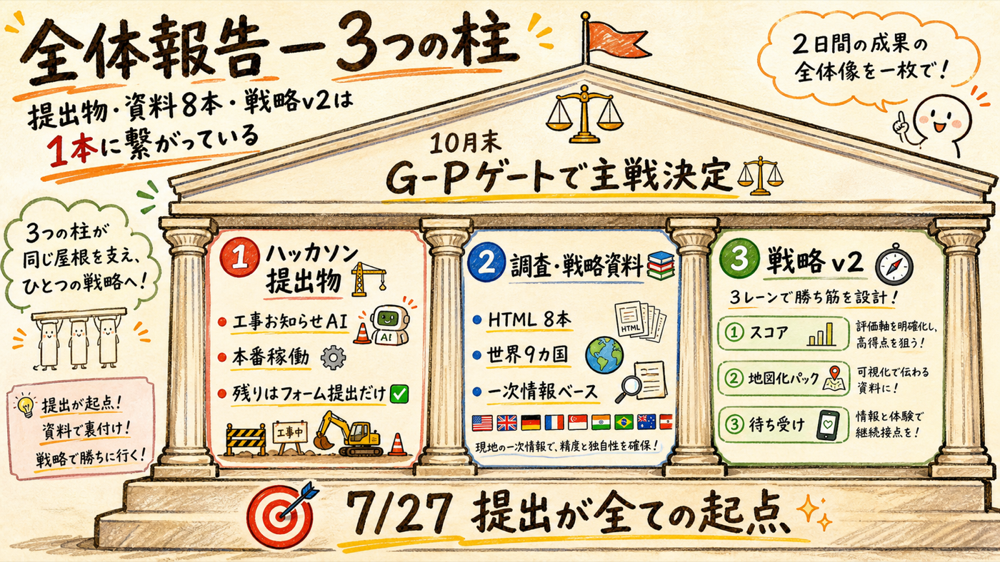
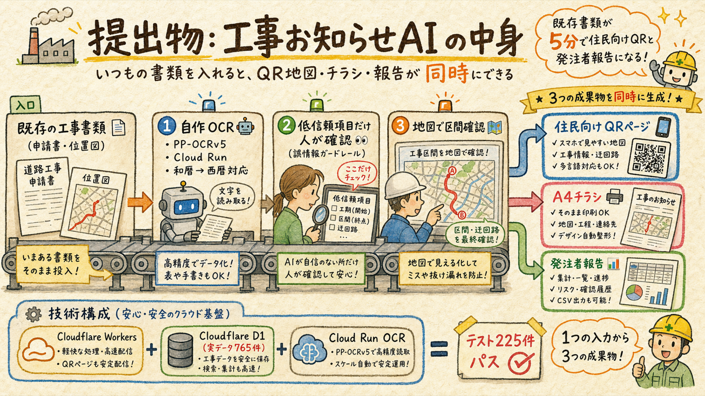
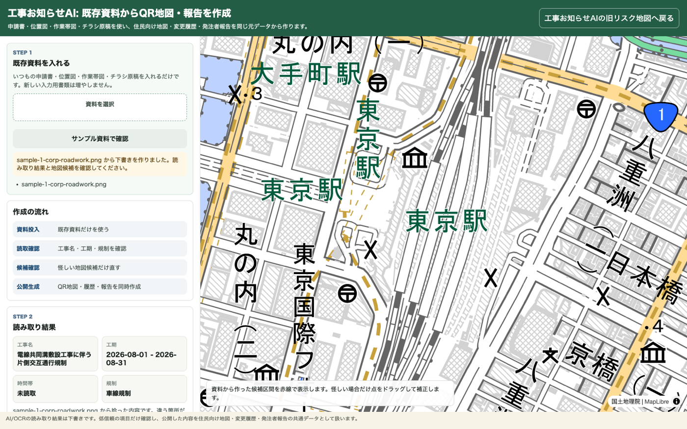
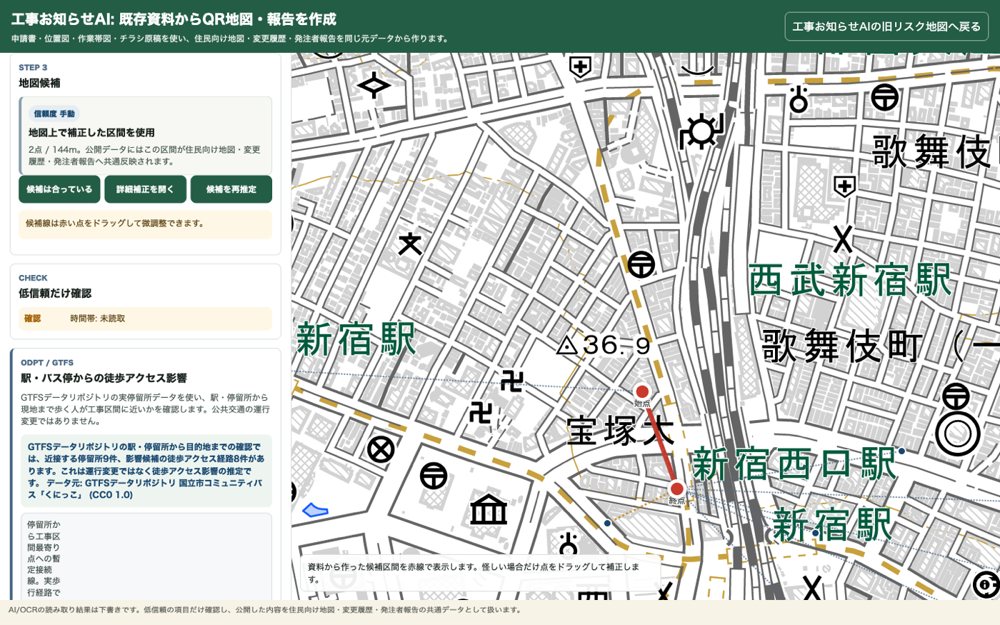
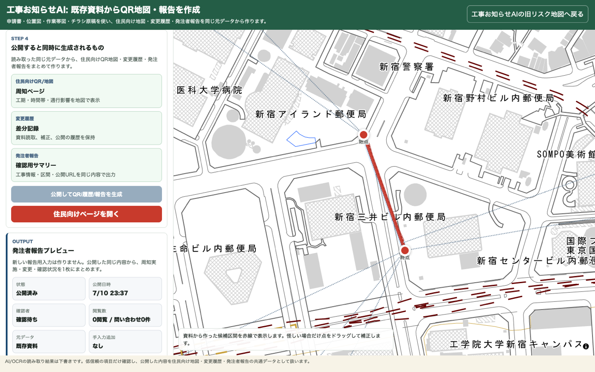
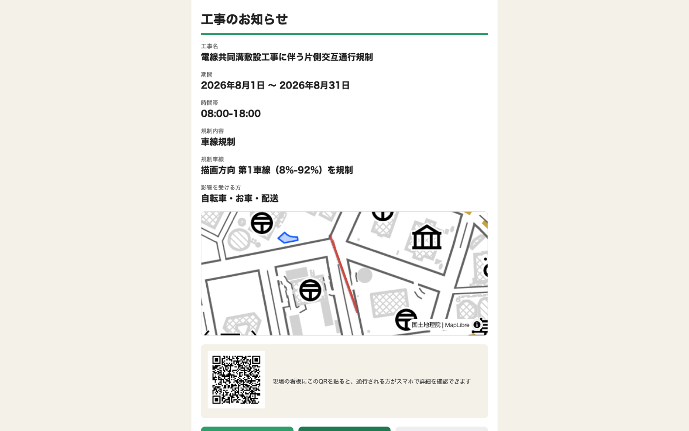
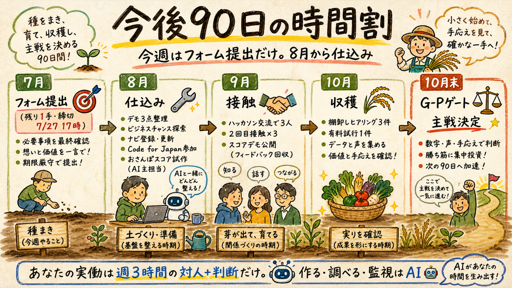

この2日間の全成果を1枚に整理した。ハッカソン提出物は本番稼働済みで残りはフォーム提出のみ。調査・戦略資料は8本すべてリンクから読める。そして全体は「工事マップは待ち受けオプション、主戦候補はおさんぽスコアと地図化パック」という戦略v2に束ねられている。
提出物・資料・戦略は別々の作業ではない

| 柱 | 状態 | 残作業 |
|---|---|---|
| 🏗️ ハッカソン提出物 | 本番稼働・E2E確認済み・キャプチャ4点撮影済み | フォーム提出のみ（あなたの送信ボタン） |
| 📚 調査・戦略資料 | 8本完成（セクション04にリンク集） | なし（読んで判断に使う） |
| 🧭 戦略v2 | 確定・メモリ保存済み | 8月から実行（仕込みはAI主担当） |
「工事お知らせAI」— 既存書類が5分で住民向けQRと発注者報告になる

| 項目 | 内容・URL |
|---|---|
| 本番アプリ | osanpo-safety.haqei64384.workers.dev（ランディング）／/trace.html（書類読取の本線デモ） |
| 審査員が触れる実デモ | 住民向けQRページ（新宿西口・サンプル工事） — 昨日の通し操作で実際に公開したもの |
| 技術構成 | Cloudflare Workers ＋ D1（都オープンデータ実データ765件）＋ 自作OCR（PP-OCRv5）を Cloud Run で本番稼働（8Gi/2CPU・トークン認証・ANTHROPICキー不要）。テスト225件パス |
| 実証済みの本線フロー | 書類アップ → OCR（和暦→西暦・年またぎ対応）→ 低信頼項目だけ確認（誤情報ガードレール）→ 地図で区間確認 → 公開 → QRページ・A4チラシ・発注者報告が同時生成 |
| 昨日直した実バグ | OCRが「要確認」にした項目を手入力で直しても公開が永久にブロックされる問題 → 修正・本番デプロイ・E2Eで公開成功を確認 |
| 提出フォーム | form.jotform.com/261468325066056（締切 7/27(月) 17:00）。原稿は docs/entry/entry-application.md に準備済み |
審査での見せ方（entry原稿の骨子）: 「工事周知を『紙を作って終わり』にしない。住民が見られるQR地図・変更履歴・発注者報告・再利用できるオープンデータまで同じ流れで作る」。検証データも実測で載せる: サンプル書類10件で必須項目抽出率80%（合否ゲートPASS）。
昨夜、本番環境を実際に操作して撮影したもの。フォームには最大3点 — 推奨は 1・2・3b




すべて一次情報ベース・図解つき・スマホ閲覧可
| # | 資料（リンク） | 1行サマリ |
|---|---|---|
| 1 | 一次情報獲得の3段ロケット | 人脈ゼロから工事の一次情報を獲る順番: オープンデータ→接点→現場。現場の入口は工事看板 |
| 2 | 個人のB2G採用実例 | 実例6件（台湾マスクマップ〜ふるさとチョイス）。公認までは個人可、金が動くと法人格の3関門 |
| 3 | 収益化調査 — 3階建て | C課金は全滅実証。B2G実勢価格（MCR料金表）と規模感（全国SAM10億弱のニッチ） |
| 4 | リスク台帳＋ロードマップ | リスク8項目の本丸は「データ鶏卵」と「実行停止」。関所4つ・撤退基準つき |
| 5 | 英米モデルの日本検証 | 英国型は罰金前提で移植不能。米国型「発注契約で義務化」が唯一動く形。B2B期待値は下方修正 |
| 6 | 世界9カ国・4つの型 | 住民向け公開単体で儲けた民間はゼロ。金脈は業務側（仏Sogelink €120M・蘭MOOR 250自治体） |
| 7 | 戦略練り直し — オプション化 | 「労力の割に儲からない」直感をデータで裏付け、第6条件を新設。工事マップを待ち受けに降格 |
| 8 | 戦略v2 — 現行版 | あなた発案の3回接触モデル×地図化パックを統合。これが今の公式戦略 |
提出物は「終わったら次」ではなく、待ち受けオプションの名刺＋最初のコミュニティ
| 枠 | 中身 | ハッカソン提出物との関係 |
|---|---|---|
| 🏅 ストック主実験 | おさんぽスコア（歩行者安全スコアの不動産向けAPI。Walk Score実証・国内空白・5条件5/5） | おさんぽセーフティのデータ基盤（L1パイプライン）の副産物として8月に試作 |
| 🗺️ 即金・需要発見 | 地図化パック「PDFやExcelに埋もれた地域情報をWeb地図に」（初回5〜15万＋月1万 [仮説]）。3回接触モデルで販売: コールド営業ゼロ・週3h上限・コア5人×3回 | 提出物がデモ1号＝1回目接触で「見せる作品」。ハッカソンの交流会・実装支援が最初の場 |
| 🔍 裏メニュー | AI事業検証レポート（今回の調査8本がそのままデモ） | 顧客が「次の事業どうしよう」と言った時に会話から出す |
| 🎫 待ち受け | 工事マップ事業（自治体業務SaaS再定義済み） | 提出→Final Stage進出なら実装支援の「引き」で再評価。義務化の波はAIが監視 |
撤退基準（決定済み・動かさない）: 地図化パック=90日で有料試行0件なら商品だけ再定義／おさんぽスコア=2027年3月に有償2社未満で凍結／G-Pゲート（10月末）=有料試行・手応え・楽しさで主戦を決定。
今週はフォーム提出だけ。8月から仕込み

| 時期 | あなた | AI |
|---|---|---|
| 今週〜7/27 | フォーム提出（「フォーム提出の準備をして」と言えば入力内容一式を用意。送信ボタンだけあなた） | 原稿・キャプチャ・URL一式の照合と最終チェックリスト作成 |
| 8月前半 | ビジネスチャンス・ナビ登録／Code for Japan Slack参加 | デモ3点整理・固定自己紹介文・おさんぽスコア試作開始 |
| 8月後半〜9月 | ハッカソン交流で3人と会話→2回目接触×3件／スコアデモ公開ボタン | 地図例の下ごしらえ・接触履歴CRM・ナビ案件監視 |
| 10月 | 棚卸しヒアリング3件→有料試行1件→G-Pゲート判断 | 質問リスト・料金表・判定材料の整理 |
どれも1行の返事で動ける
| # | 事項 | 返事の例 |
|---|---|---|
| 1 | フォーム提出の準備開始 | 「フォーム提出の準備をして」 |
| 2 | 未コミット変更のコミット（ocr-node/Dockerfile・trace.jsバグ修正・DEPLOY.md・キャプチャ） | 「コミットして」 |
| 3 | キャプチャ3点の最終選定（推奨: 1・2・3b。発注者報告を推すなら3と差し替え） | 「1・2・3bでいい」 |
| 4 | デモ公開notice（新宿西口サンプル）の扱い — 審査用に残置が推奨 | 「残しておいて」or「消して」 |